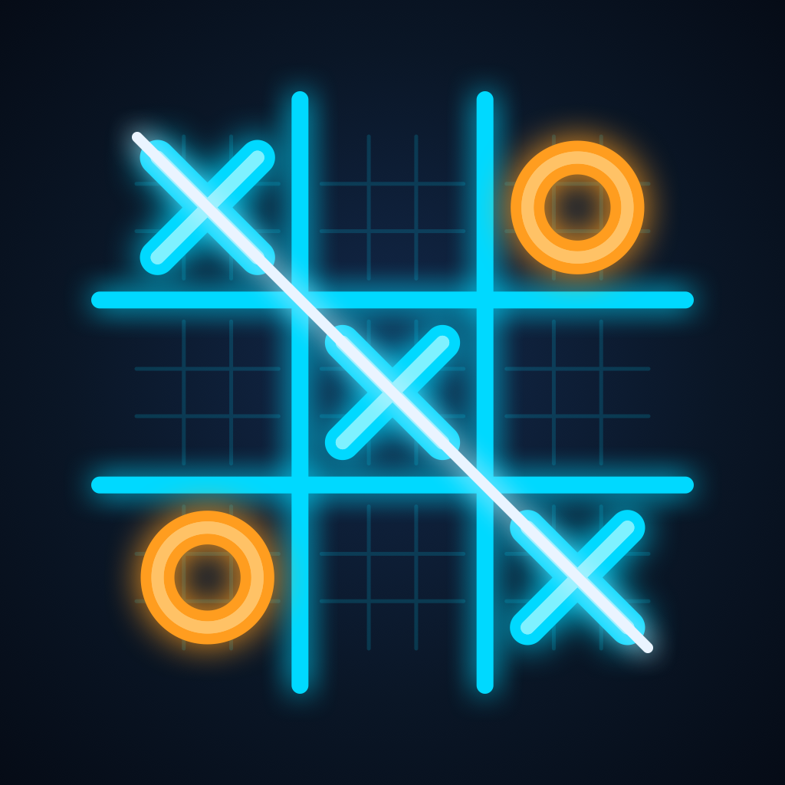

超级井字棋 · 技术支持
怎么玩
棋盘由 9 个小井字棋组成。你在小棋盘里落子的位置，决定了对手下一步要去哪个小棋盘。在小棋盘里连成三子即可拿下这个棋盘；拿下三个小棋盘连成一线，就赢得整局。
对局中会随机出现道具格子，落子在上面就能获得道具：⚡ 连击卡（再走一步）、💣 拆除卡（拆掉对方一枚棋子）、🔄 穿梭卡（这一步无视强制规则，任选棋盘落子）、🔒 封锁卡（禁止对手下一步进入某个棋盘）。
常见问题
没有声音？ 游戏音效会跟随手机的静音开关，请关闭静音模式并调高音量。
怎样清零战绩？ 点击计分板旁的重置按钮即可。
需要联网吗？ 不需要，游戏完全离线运行。
联系我们
遇到问题或有建议，请发送邮件至 tonychen8669@gmail.com，我们会尽快回复。
Ultimate Tic-Tac-Toe support: tonychen8669@gmail.com